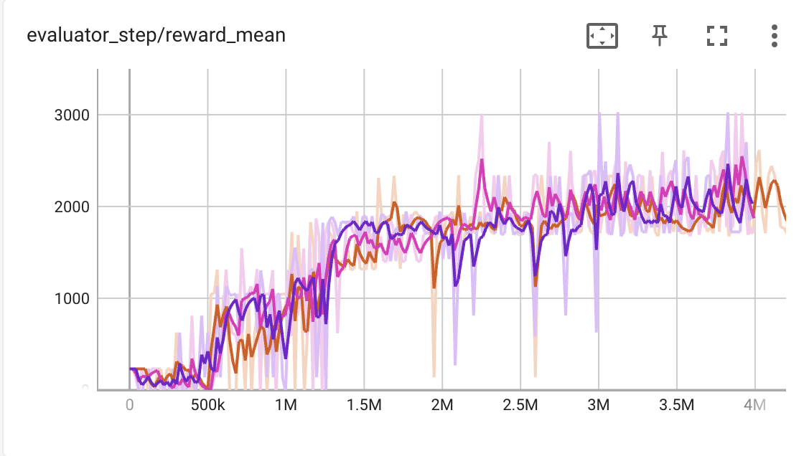

More Reinforcement Learning Program (Customized Env)¶
Super Mario Bros. & Super Mario Bros. 2 (Lost Levels) on The Nintendo Entertainment System (NES) is one of the most popular games in 1980s. How about design a DRL-based AI to explore this classic game? In this tutorial, we will implement an AI-powered Mario (using DQN algorithm) in DI-engine.

Using the Configuration File¶
DI-engine uses a global configuration file to control all variables of the environment and strategy, each of which has a corresponding default configuration that can be found in mario_dqn_config, in the tutorial we use the default configuration directly:
from dizoo.mario.mario_dqn_config import main_config, create_config
from ding.config import compile_config
cfg = compile_config(main_config, create_cfg=create_config, auto=True)
Initialize the Environments¶
Super Mario Bros. is an image input observation environment, so we don’t just wrapper original gym environment with DingEnvWrapper but need to add some additional wrappers to pre-process observation before sending it to DQN Policy.
In this tutorial, we use the following 5 wrapper to pre-process data and transform into DI-engine’s environment format. Here are some basic description, and you can find the whole code implementation and comments here
MaxAndSkipWrapper: Due to consecutive frames don’t vary much, we can skip n-intermediate frames to simplify it without losing much information.
WarpFrameWrapper: Transform original RGB image to grayscale image and resize it to standard size for DRL training.
ScaledFloatFrameWrapper: Normalize origin image from [0-255] to [0-1], which is beneficial to neural network training.
FrameStackWrapper: Stack the consecutive frames. Due to we can’t infer some information like direction speed from a single frame, stacked frames can provide more necessary information.
EvalEpisodeReturnEnv: Record evaluation episode return (i.e., episode return in mario), which is adapted to DI-engine’s environment format.
Note
If you can’t find proper env wrapper, you can define your own wrapper following gym.Wrapper format, or you can implement a subclass of DI-engine’s env format according to Customized Env doc.
# use subprocess env manager to speed up collecting
from ding.envs import DingEnvWrapper, BaseEnvManagerV2, SubprocessEnvManagerV2
import gym_super_mario_bros
from nes_py.wrappers import JoypadSpace
def wrapped_mario_env():
return DingEnvWrapper(
# Limit the action-space to 2 dim: 0. walk right, 1. jump right
JoypadSpace(gym_super_mario_bros.make("SuperMarioBros-1-1-v0"), [["right"], ["right", "A"]]),
cfg={
'env_wrapper': [
lambda env: MaxAndSkipWrapper(env, skip=4),
lambda env: WarpFrameWrapper(env, size=84),
lambda env: ScaledFloatFrameWrapper(env),
lambda env: FrameStackWrapper(env, n_frames=4),
lambda env: EvalEpisodeReturnEnv(env),
]
}
)
collector_env_num, evaluator_env_num = cfg.env.collector_env_num, cfg.env.evaluator_env_num
collector_env = SubprocessEnvManagerV2(
env_fn=[wrapped_mario_env for _ in range(collector_env_num)], cfg=cfg.env.manager
)
evaluator_env = SubprocessEnvManagerV2(
env_fn=[wrapped_mario_env for _ in range(evaluator_env_num)], cfg=cfg.env.manager
)
Note
The following parts is the same as CartPole + DQN example, just select policy and pack the entire training pipeline.
Select Policy¶
DI-engine covers most of the reinforcement learning policies, using them only requires selecting the right policy and model. Since DQN is off-policy, we also need to instantiate a buffer module.
from ding.model import DQN
from ding.policy import DQNPolicy
from ding.data import DequeBuffer
model = DQN(**cfg.policy.model)
buffer_ = DequeBuffer(size=cfg.policy.other.replay_buffer.replay_buffer_size)
policy = DQNPolicy(cfg.policy, model=model)
Build the Pipeline¶
With the various middleware provided by DI-engine, we can easily build the entire pipeline:
from ding.framework import task
from ding.framework.context import OnlineRLContext
from ding.framework.middleware import OffPolicyLearner, StepCollector, interaction_evaluator, data_pusher, eps_greedy_handler, CkptSaver, nstep_reward_enhancer
with task.start(async_mode=False, ctx=OnlineRLContext()):
# Evaluating, we place it on the first place to get the score of the random model as a benchmark value
task.use(interaction_evaluator(cfg, policy.eval_mode, evaluator_env))
task.use(eps_greedy_handler(cfg)) # Decay probability of explore-exploit
task.use(StepCollector(cfg, policy.collect_mode, collector_env)) # Collect environmental data
task.use(nstep_reward_enhancer(cfg)) # Prepare nstep reward for training
task.use(data_pusher(cfg, buffer_)) # Push data to buffer
task.use(OffPolicyLearner(cfg, policy.learn_mode, buffer_)) # Train the model
task.use(CkptSaver(cfg, policy, train_freq=100)) # Save the model
# In the evaluation process, if the model is found to have exceeded the convergence value, it will end early here
task.run()
Run the Code¶
The full example can be found in mario DQN example and can be run via python3 mario_dqn_example.py.
This demo can draw a successful result in a few hours, our super mario can pass level 1-1 as soon as possible without any demage, here are the trained agent replay video and the detailed training curve (evaluation episode return/env interaction step).

{kind=link}
Now you have completed your customized env example with DI-engine, you can try out more algorithms in the Examples directory, or continue reading the documentation to get a deeper understanding of DI-engine’s Algorithm, System Design and Best Practices.